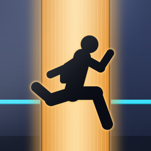
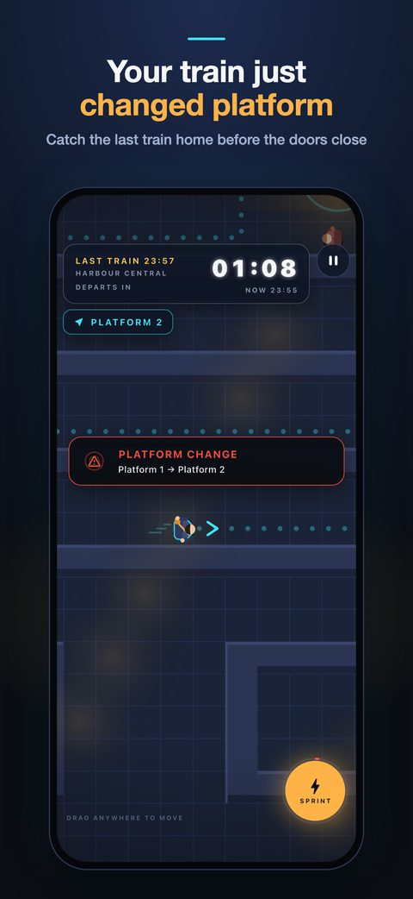
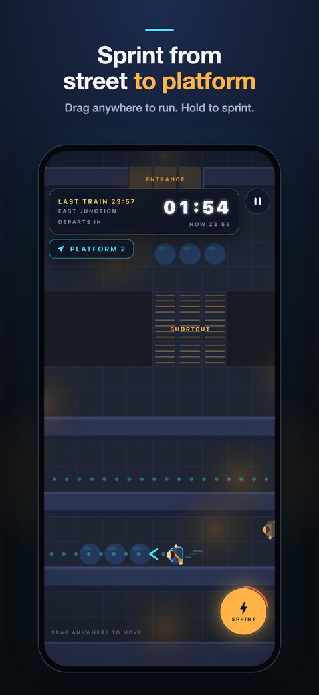
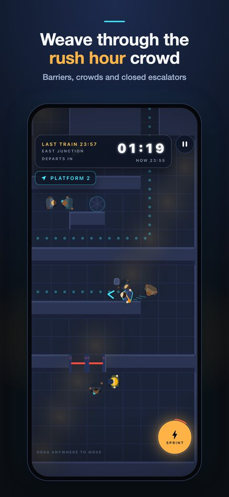
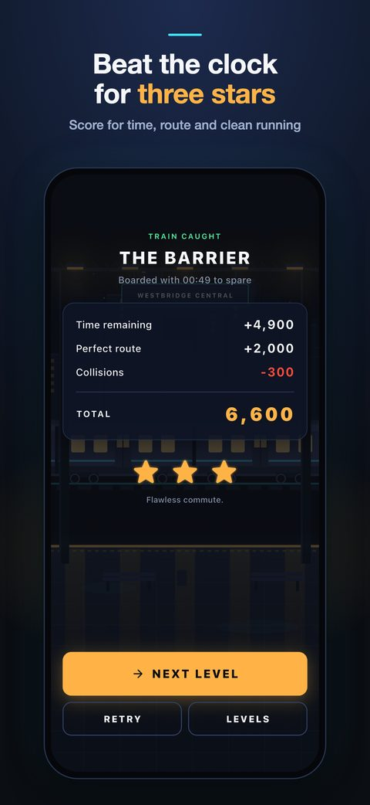
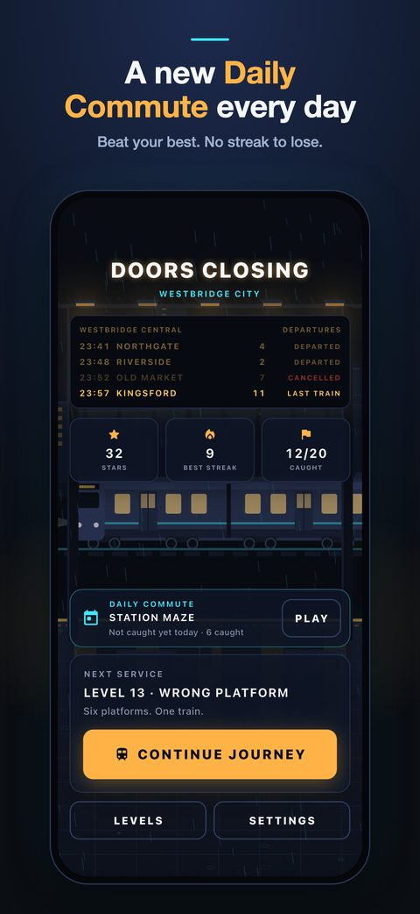
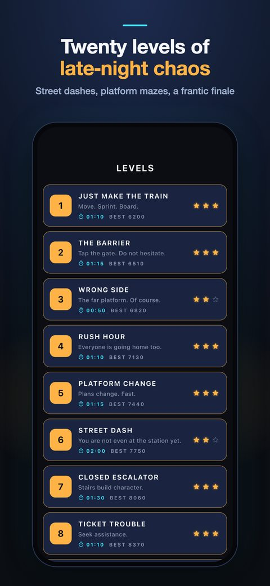

The doors are closing. Can you make it?
Doors Closing is a rush hour commuter arcade game for iPhone. Sprint through a rain-soaked station and catch the last train home before the doors shut. Drag anywhere to run, hold to sprint, tap through the ticket barrier and reach the right platform before the countdown hits zero. Most runs last under two minutes.
Platform changes. Escalators closed. Lifts out of service. Your ticket rejected at the gate. A tourist who needs directions right now. Twenty-five disruptions fire at different moments, and your route redraws itself while the clock keeps counting down.
One route a day, the same for everyone on that date, with your own best score to beat. Miss a day and you lose nothing: there is no streak to protect.
Street dashes through traffic and rain. Island concourses. Six-platform mazes. Crowd surges. Wet floors that steal your footing. Then a finale that throws all of it at you at once.






Yes, it is free to download. Levels 1 to 10 and the Daily Commute are free. An optional one-time purchase, the Full Journey, unlocks levels 11 to 20 and any level added later. No subscription, no adverts.
No. The game plays offline. Only buying or restoring the Full Journey, or opening the App Store to leave a rating, uses the App Store.
iPhone, from the App Store.
It is rated 4+. There is no chat, no adverts and no account. The purchase screen sits behind a grown-up check.
No. Westbridge City, its stations, operators and routes are all fictional.